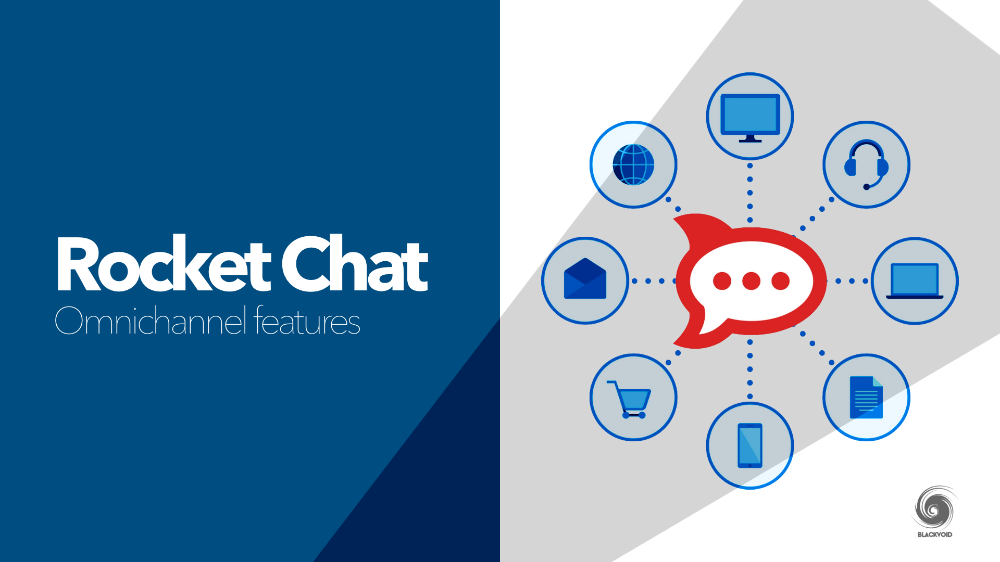

Instalación y configuración de
Rocket
Chat en AWS

Al implementar nuestro servidor de Rocket.Chat en AWS, cualquier usuario puede registrarse y crear una cuenta al
acceder a la dirección IP del servidor desde cualquier dispositivo con conexión a Internet. Esta accesibilidad
permite una comunicación eficiente y colaborativa entre miembros del equipo, independientemente de su ubicación
geográfica. Además, si disponemos de un nombre de dominio, el servidor también será accesible a través de este,
proporcionando una interfaz de usuario más amigable y profesional. Configurar un dominio personalizado no solo
mejora la accesibilidad, sino que también fortalece la imagen de marca y facilita la integración con otras
herramientas y servicios corporativos.
Me di a la tarea de crear un código funcional para Cloudformation con el cual poder crear una instancia en la
cual se instale la plataforma de Rocket Chat automáticamente. Lo único que se necesita es crear un par de llaves
y ejecutar el código de Cloudformation, esperar entre 5 y 10 minutos (dependiendo del tipo de instancia que
utilicemos) y listo. Podemos acceder a nuestro servidor con la IP pública de nuestra instancia.
Rocket.Chat es una plataforma de comunicación y colaboración de código abierto diseñada para proporcionar
mensajería instantánea y funcionalidades avanzadas de chat en equipo. Similar a aplicaciones como Slack y
Discord, Rocket.Chat permite a los usuarios comunicarse en tiempo real a través de mensajes de texto,
intercambio de archivos, videollamadas, y mucho más. Una de las características distintivas de Rocket.Chat es su
naturaleza de código abierto, lo que permite a las organizaciones personalizar y adaptar la plataforma según sus
necesidades específicas, así como mantener un control total sobre los datos y la seguridad.
Rocket.Chat se utiliza principalmente para mejorar la comunicación interna y la colaboración dentro de equipos y organizaciones. Las empresas pueden crear canales públicos y privados para discutir proyectos, compartir archivos y coordinar tareas. Además, Rocket.Chat permite la mensajería directa entre usuarios, lo que facilita la comunicación uno a uno. Las integraciones con otras herramientas de productividad, como GitHub, Jira y Trello, hacen que Rocket.Chat sea una solución integral para la gestión de proyectos y la colaboración en tiempo real. También es ampliamente utilizado por comunidades en línea, instituciones educativas y organizaciones sin fines de lucro para facilitar la comunicación y el trabajo en equipo.
Rocket.Chat se utiliza principalmente para mejorar la comunicación interna y la colaboración dentro de equipos y organizaciones. Las empresas pueden crear canales públicos y privados para discutir proyectos, compartir archivos y coordinar tareas. Además, Rocket.Chat permite la mensajería directa entre usuarios, lo que facilita la comunicación uno a uno. Las integraciones con otras herramientas de productividad, como GitHub, Jira y Trello, hacen que Rocket.Chat sea una solución integral para la gestión de proyectos y la colaboración en tiempo real. También es ampliamente utilizado por comunidades en línea, instituciones educativas y organizaciones sin fines de lucro para facilitar la comunicación y el trabajo en equipo.
Las instancias de AWS son máquinas virtuales que proporcionan capacidad de computación en la nube. Los
usuarios pueden elegir entre una variedad de tipos de instancias según sus requisitos de procesamiento,
memoria y almacenamiento. AWS permite a las organizaciones seleccionar la instancia más adecuada para su carga
de trabajo específica, lo que optimiza los costos y el rendimiento. Además, las instancias de AWS pueden
configurarse y gestionarse fácilmente mediante la consola de administración de AWS, la línea de comandos, o
las API de AWS, proporcionando flexibilidad y control a los administradores.

Instalar Rocket.Chat en una instancia de AWS (Amazon Web Services) ofrece varias ventajas significativas. AWS es
una plataforma de servicios en la nube confiable y escalable que permite a las organizaciones desplegar
aplicaciones y servicios en una infraestructura global. Utilizar AWS para alojar Rocket.Chat proporciona una
alta disponibilidad y un rendimiento óptimo gracias a la infraestructura robusta de Amazon. Además, AWS permite
escalar fácilmente la instancia según el crecimiento y las necesidades de la organización, asegurando que la
plataforma de comunicación pueda manejar un aumento en el número de usuarios sin problemas.